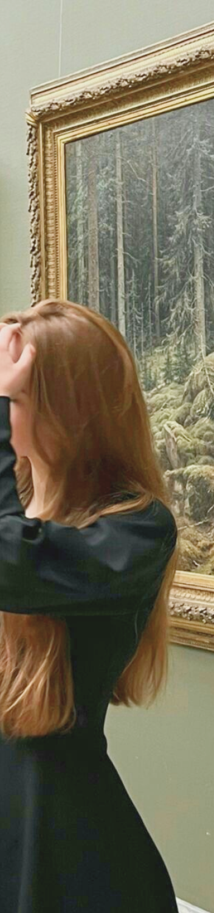

Привіт,
Я Карина- психолог/
психотерапевт
Я працюю в методі транзактного аналізу

Я працюю в методі транзактного аналізу
Ви напевно чули про сценарії, внутрішню дитину, ігри в які грають люди, трикутник Карпмана. Ось це все ТА(транзактний аналіз).
Живу у Києві консультую людей з усього світу, зараз працюю тільки онлайн.
Здобула диплом бакалавра,
факультет «психології», окрім цього проходила різне навчання та курси пов’язані з консультуванням та терапією: дітей, підлітків, дорослих, сімейних пар.
❗️ Практикую вже більше 6 років, зараз не працюю з дітьми.
Транзактний аналіз, Арт-терапія, Інте-гративна психотерапія
Тривога, емоційна заплутаність, емоційне вигорання, апатія, втрата мотивації, стрес, втрата та пошук сенсу життя, психосоматика, розлади харчової поведінки, самотність, конфлікти в парі, кризи в відносинах, труднощі у стосунках з однолітками, апатія та емоційна пригніченість, проблеми у навчанні, самовизначення
Моя місія-
допомогти людині
знайти свою індивідуальнасть
Карино, дякую за сесію! Зрозуміла, що ми працюємо вже 2 місяці та видимі результати ) зі стану скутості, фізичної втоми і навіть болю (у плечах та спині) та емоційної напруги я прийшла до стану розслабленості, до вибору себе і своїх хочу і до маленьких кроків зміни звичних сценаріїв поведінки, які приносять свої результати! Дякую!❤️
Дуже дякую за консультацію) Мені сподобалося! Я багато, що відкрила нового для себе і ще маю над чим подумати. Ти все доступно пояснює і бачиш по суті. Рада, що все ж таки наважилася на сеанс с тобою!😌